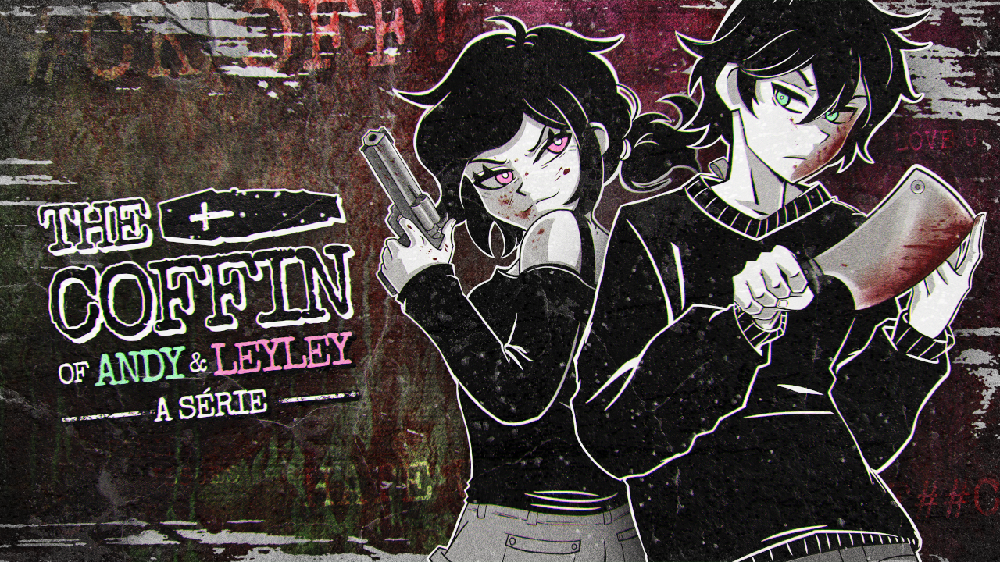
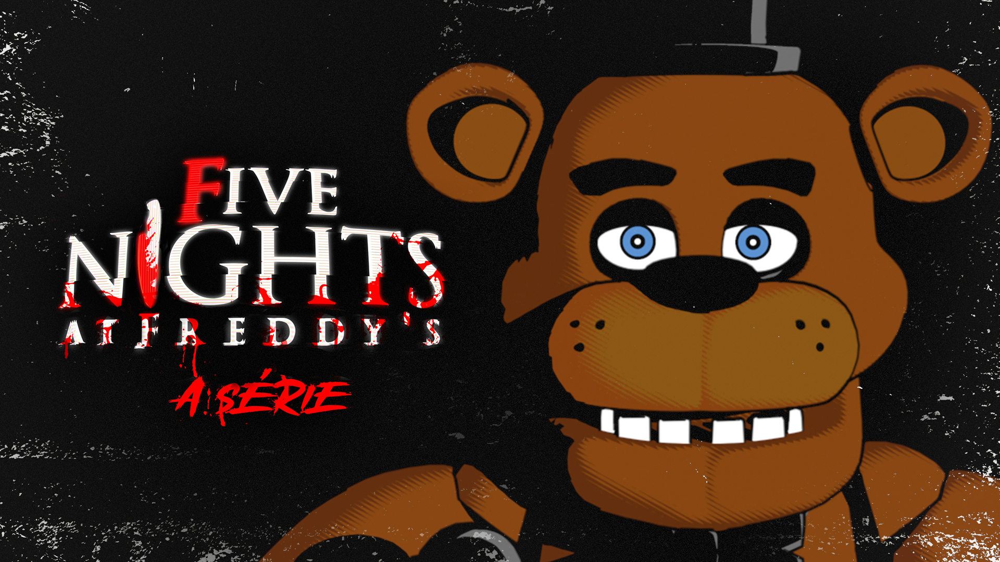
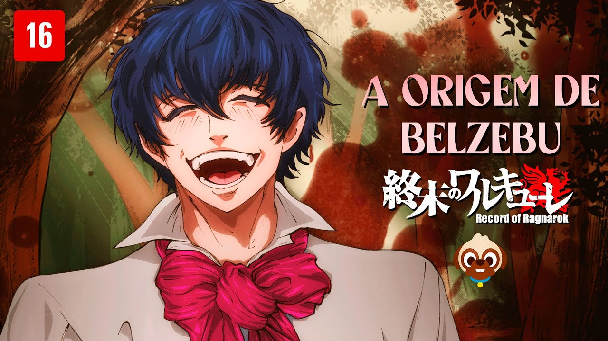

Bonk Studios
Home
Procurar
Bonk Show
Bonk Music
Bonk Play
Bonk Expo
☰
NOVO TEASER
Hazbin Stories: Alastor
Teaser Revelação Oficial
Ver Teaser
PRIMEIROS MINUTOS
The Coffin of Andy and Leyley: Primeiros Minutos
EM ALTA
FNAF: A Série (Episódio 2 REMASTER)
Séries
❮
❯

The Coffin of Andy and Leyley
1 Episódio

FNAF: A Série
2 Episódios

Luz vs Escuridão
1 Episódio
Catálogo de Vídeos
Todos
Episódios
Trailers
Lives
Especiais
Shorts
❮
❯